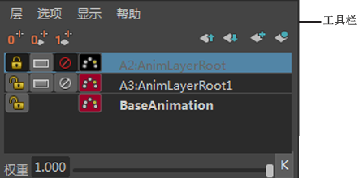

下表介绍了“动画层编辑器”(Animation Layer Editor)工具栏中的按钮。
|
|
零关键帧层(Zero Key Layer) |
在具有原始动画零偏移的动画层上设定关键帧。这有助于限定在层上要编辑的特定时间范围。请参见设置动画层上的对象的关键帧中的“设置零关键帧”。 |
|
|
权重设定为 0/设置关键帧(Set Weight to 0/Set Key) |
设定并对动画层“权重”(Weight)设置关键帧为零。请参见为动画层的权重设置关键帧。 |
|
|
权重设定为 1/设置关键帧(Set Weight to 1/Set Key) |
设定并对层“权重”(Weight)设置关键帧为 1。请参见为动画层的权重设置关键帧。 |
| 上移层 |
在动画层窗格中上移选定层。请参见对动画层重新排序 |
|
| 下移层 |
在动画层窗格中下移选定层。请参见对动画层重新排序 |
|
| 创建空层(Create Empty Layer) |
请参见动画层编辑器菜单栏中的“创建空层”(Create Empty Layer)。 |
|
| 从选定对象创建层(Create Layer From Selected) |
请参见动画层编辑器菜单栏中的“从选定对象创建层”(Create Layer from Selected)。 |